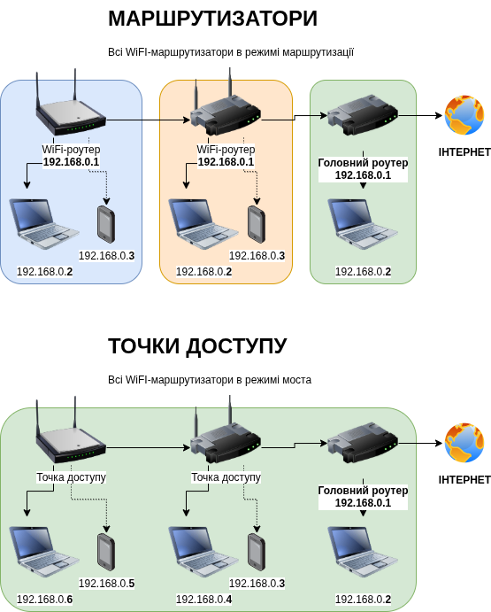
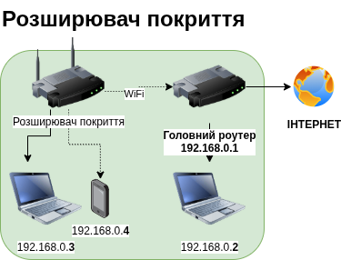
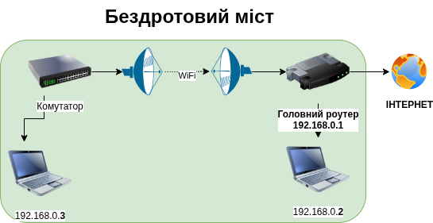
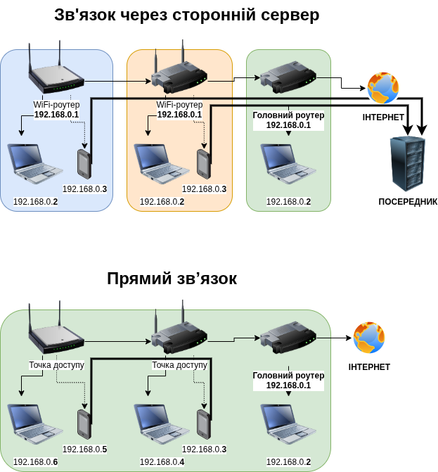

Маршрутизатор (router, роутер) може працювати так само як комутатор (switch, свіч), коли потрібно розширити локальну мережу. В загальному такий режим роботи називається «міст» (bridge, брідж), а для мережі WiFi — «точка доступу» до мережі (Access Point, акцес поінт).

Якщо точка доступу підключена до основного маршрутизатора не по кабелю, а по WiFi, то її називають «розширювач покриття WiFi» (WiFi range extender, вайфай ренж екстендер).

Якщо сигнал WiFi передається лише між двома комутаторами, а звичайні абоненти підключитися не можуть, то це називається «бездротовий міст» (wireless bridge, ваєрлес брідж).

Якщо в бездротовому мості по середині включений розширювач WiFi, то його називають «релейна станція» (relay, релей).
Хоча ці пристрої називаються по різному, це все — бездротові точки доступу до мережі, і до них можна підʼєднуватися при допомозі ноутбуків, телефонів, чи такого ж самого обладнання. Далекобійні точки доступу, такі наприклад як AirFiber, які можуть передавати сигнал WiFi на кілька кілометрів, потребують сильного захисту мережі (WPA3, AES256), довгих і складних унікальних паролів, та використання VPN при передачі трафіку.
Щоб всі абоненти в мережі могли працювати один з одним та головним роутером напряму. Коли абоненти не можуть звʼязатися напряму, вони змушені використовувати сторонні сайти в інтернеті для передачі даних, що погано для безпеки та для швидкості звʼязку.

Точка доступу бере сигнал із дротового кабелю (від комутатора або маршрутизатора) і перетворює його на Wi-Fi, щоб ваш телефон, ноутбук або планшет могли працювати в мережі, не маючи фізичного підключення кабелем. На відміну від маршрутизатора, точка доступу не створює свою власну локальну мережу, а лише розширює локальну мережу основного маршрутизатора.